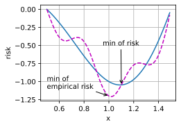

Text(0.5, 0.5, 'y')Let’s examine empirical risk vs. risk:
Text(0.5, 0.5, 'y')For a \(k\)-dimensional input vector:
Consider a simple MLP with a single hidden layer of \(d\) dimensions:
For a symmetric random matrix \(\mathbf{M}\):
Additional challenges in deep learning optimization?
Balancing a ball on a saddle: